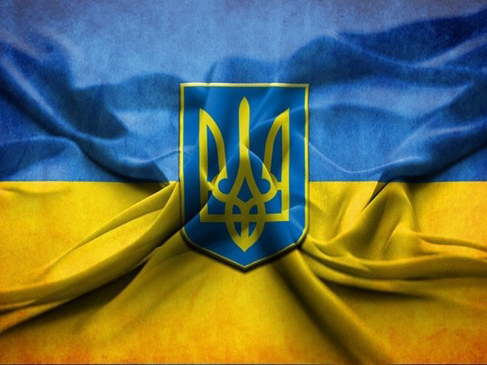

Показати зображення

Держа́вний пра́пор Украї́ни — сучасний прапор України, стяг із двох рівновеликих горизонтальних смуг синього і жовтого кольорів. Співвідношення ширини прапора до його довжини. Жовтий (золотий) і синій кольори використовувалися на гербі Руського королівства XIV століття. Вони також вживалися на гербах руських земель, князів, шляхти і міст середньовіччя і раннього нового часу.